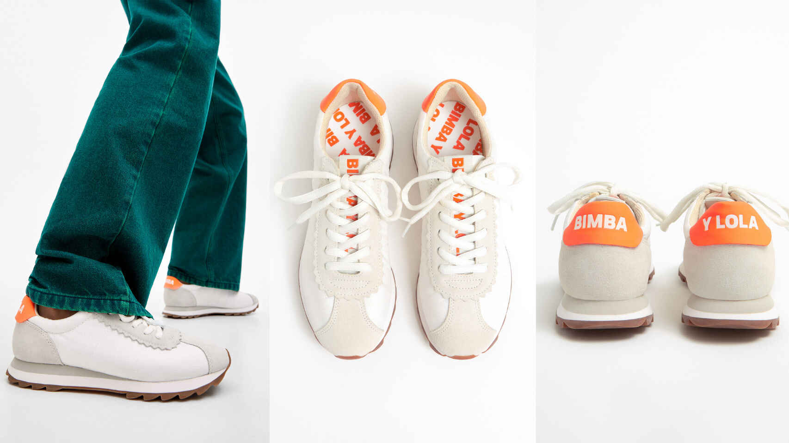

LAS ZAPATILLAS NIKE QUE HAN ARRASADO EN EL BLACK FRIDAY
Cuando se acerca el Black Friday, millones de personas piensan en todos esos productos caros que quisieron comprarse en algún momento pero que les dio nosequé dejarse el bolsillo en ellos.
Los últimos artículos de tecnología o las nuevas tendencias en ropa y calzado nunca han sido baratos, por lo que, cuando la responsabilidad venció la lucha con uno mismo entre comprar o no comprar, entraron en juego míticas frases como " ya lo pediré para mi cumpleaños", "a ver si me lo dejan los Reyes" o "a ver si lo rebajan en el Black Friday.". Eso sí, más te vale correr.
Los productos más deseados por los consumidores siempre arrasan cuando están en oferta, y uno de los grandes ejemplos de este año han sido las zapatillas Nike Blazer Mid '77 Vintage de color blanco con un precio original de 99,99 euros. Si tenías pensado comprártelas, sentimos comunicarte que en la página web han volado a un ritmo frenético.
La empresa deportiva vende todos sus artículos con un 25% de descuento esta semana con motivo de la celebración del Black Friday, la costumbre estadounidense que va camino de convertirse en tradición mundial.
Estas zapatillas clásicas, que según señalan en la web de Nike empezaron a venderse desde los años 70 (con un modelo algo más anticuado que ahora, claro está), no han llegado ni al viernes 27 de noviembre, día oficial en el que se celebra el Black Friday 2020. Se han agotado en los primeros días de oferta.

Eso sí, los modelos para mujer y las zapatillas para hombre de color negro siguen estando disponibles en la página de Nike. Aunque visto lo visto, es posible que les quede poco tiempo de vida.
Zapatillas blancas: el calzado más versátil y funcional resurge con fuerza esta temporada
Pese a su toque 'sport', combinan con todos los estilismos, desde el más elegante hasta el más informal; por eso, este tipo de prenda se posiciona como un básico de todo armario.
Estas zapatillas de Bimba y Lola recuperan el tradicional aire retro de este calzado. Este modelo tipo running cuenta con piezas de serraje festoneadas y combina varios tejidos técnicos. Además, su toque estrella se encuentra en la pieza de color naranja con el logo grabado a contraste. Este tipo de calzado, con ese aire llamativo, triunfa en pasarelas y el propio street style con elegancia. Combina con pantalones estilo culotte y con vestidos de corte midi. Su precio actual es de 58 euros.
Con una franja naranja y detalles en negro, esta zapatilla blanca de cordones destaca en Mango por su diseño combinando y punta redonda. Su precio es de 31, 99 euros.
Incautan ropa y calzado falsificados por valor de más de 4.000 euros en Tui
La actuación de la Guardia Civil durante un control rutinario en Tui se ha saldado con un importante golpe contra la piratería en Galicia. Así, se decomisó más de 160 prendas de ropa y 40 pares de zapatillas deportivas, cuyo valor en el mercado puede superar los 4.000 euros.
La Guardia Civil se ha incautado de una partida de ropa y calzado supuestamente falsificados y que le fueron intervenidos a un conductor durante un control de tráfico en Tui (Pontevedra). Según han informado fuentes del Instituto Armado, los hechos ocurrieron el pasado viernes, cuando una dotación estaba realizando un control selectivo de vehículos en la PO-52 en Tui. Los agentes pararon a un coche y, al inspeccionar su interior, comprobaron que había ropa y calzado con etiquetas de reconocidas marcas supuestamente falsificadas, y que estarían destinados a la venta en mercadillos y ferias. El conductor carecía de factura de compra de los artículos y tampoco tenía autorización de las marcas para la venta de los mismos, porque lo que la ropa y el calzado fueron intervenidos, y el hombre fue notificado como investigado por un supuesto delito contra la propiedad industrial. En total, la Guardia Civil se incautó de más de 160 prendas de ropa (sudaderas, camisetas, chándales y pantalones) y 40 pares de zapatillas deportivas, cuyo valor en el mercado puede superar los 4.000 euros. Las prendas y el calzado intervenidos, junto con las diligencias practicadas, serán entregadas en el juzgado de instrucción de Tui (Pontevedra).